Candidate List 20260314 Previous Day Next Day Section 1: New Sources (age<1d) Cosmological Afterglow
Section 2: Old (1-5d) sources observed last night placeholder
Section 1: New Afterglow/FBOT Cands Last Night (4)
1. ZTF26aalbqhb (Afterglow?FBOT?) [Back to Top] [Share] [Trigger Swift] [Fritz ] [Lasair ]RA, Dec: 130.72249, 54.02817 8h42m53.40s, 54d 1m41.43sGalactic (l, b): 164.04041, 37.83218 ext(g-r) = 0.025LegacySurvey: 1 sources in 3 arcsec Closest: d = 0.64 arcsec, 104.7 deg (east of north) photoz=0.47 (68% bounds 0.24, 0.93), type=PSF peak abs mag = -22.3 (68% bounds -20.63, -24.13) Consistent with synchrotron, g-r>0!
2. ZTF26aaldqib (Afterglow?) [Back to Top] [Share] [Trigger Swift] [Fritz ] [Lasair ]RA, Dec: 101.01754, 17.35752 6h44m4.21s, 17d21m27.06sGalactic (l, b): 196.60194, 6.24219 ext(g-r) = 0.226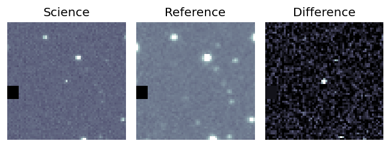
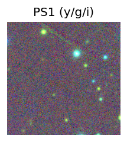
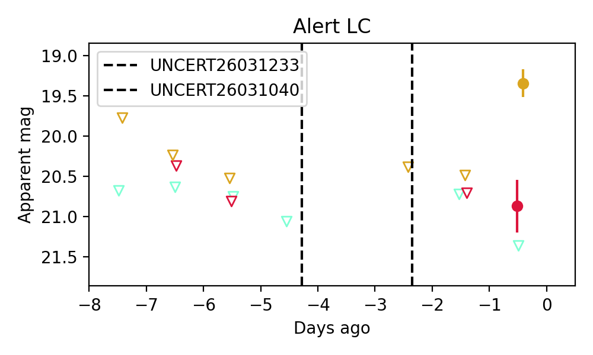
Consistent with synchrotron, g-r>0!
3. ZTF26aaldyuq (Afterglow?) [Back to Top] [Share] [Trigger Swift] [Fritz ] [Lasair ]RA, Dec: 128.38857, 19.64367 8h33m33.26s, 19d38m37.21sGalactic (l, b): 205.28461, 30.96557 WARNING: 0.85 deg from ecliptic plane ext(g-r) = 0.032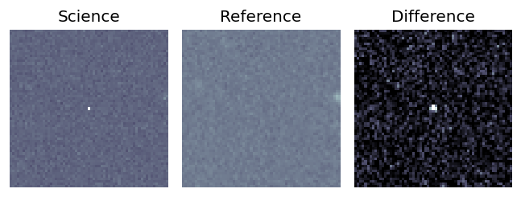
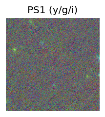
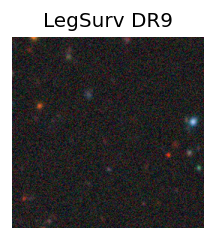
LegacySurvey: 1 sources in 3 arcsec Closest: d = 3.42 arcsec, 161.0 deg (east of north) photoz=1.08 (68% bounds 0.95, 1.24), type=REX peak abs mag = -24.56 (68% bounds -24.22, -24.93) 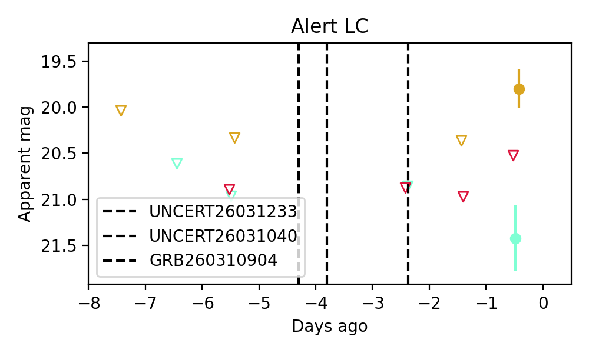
Consistent with synchrotron, g-r>0!
4. ZTF26aaldyys (Afterglow?) [Back to Top] [Share] [Trigger Swift] [Fritz ] [Lasair ]RA, Dec: 138.63296, 23.80816 9h14m31.91s, 23d48m29.38sGalactic (l, b): 204.09595, 41.30497 ext(g-r) = 0.049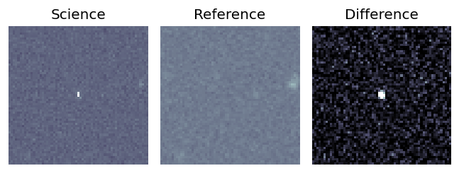
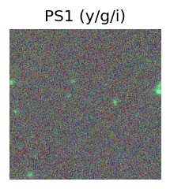
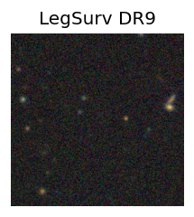
LegacySurvey: 1 sources in 3 arcsec Closest: d = 7.56 arcsec, 67.4 deg (east of north) photoz=0.6 (68% bounds 0.4, 0.8), type=REX peak abs mag = -24.05 (68% bounds -23.0, -24.79) 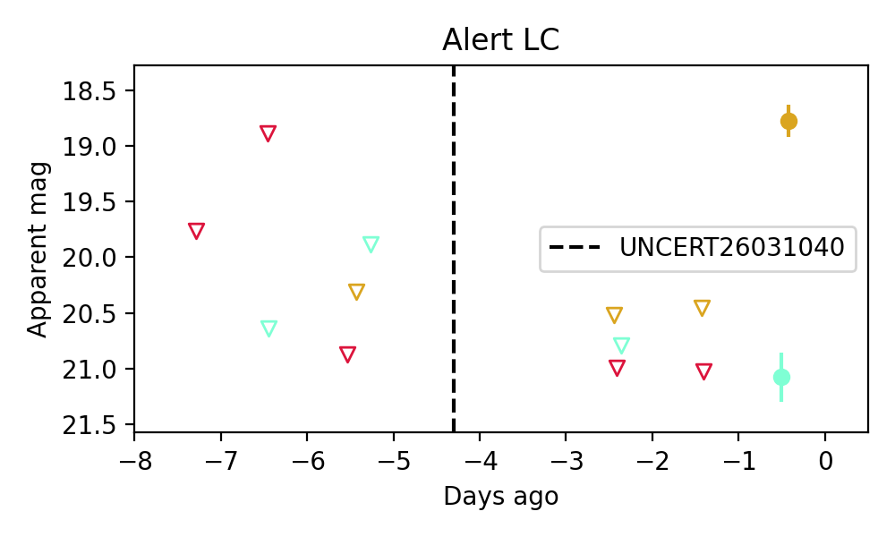
Consistent with synchrotron, g-r>0!
Section 2: Older Sources Observed Last Night (33)
0. ZTF26aajwtey (FBOT?) [Back to Top] [Share] [Trigger Swift] [Fritz ] [Lasair ]RA, Dec: 136.00543, 23.23738 9h 4m1.30s, 23d14m14.58sGalactic (l, b): 203.91825, 38.83287 ext(g-r) = 0.034peak abs mag = -19.09 LegacySurvey: 1 sources in 3 arcsec Closest: d = 1.45 arcsec, 317.0 deg (east of north) photoz=0.14 (68% bounds 0.12, 0.17), type=SER peak abs mag = -19.76 (68% bounds -19.31, -20.11) Consistent with synchrotron, g-r>0!
1. ZTF26aakbgha (Afterglow?) [Back to Top] [Share] [Trigger Swift] [Fritz ] [Lasair ]RA, Dec: 46.66584, 35.7763 3h 6m39.80s, 35d46m34.66sGalactic (l, b): 151.53854, -19.47476 ext(g-r) = 0.276PS1: 1 source in 3 arcsec Closest: d = 5.96 arcsec photoz=0.55+/-0.19 peak abs mag = -25.10
2. ZTF26aakhfje (Afterglow?) [Back to Top] [Share] [Trigger Swift] [Fritz ] [Lasair ]RA, Dec: 214.37206, 28.81338 14h17m29.30s, 28d48m48.15sGalactic (l, b): 43.03296, 70.95177 ext(g-r) = 0.017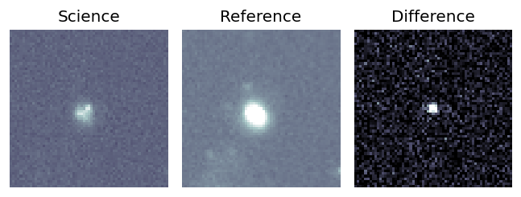
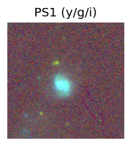
peak abs mag = -18.29 LegacySurvey: 1 sources in 3 arcsec Closest: d = 3.38 arcsec, 139.1 deg (east of north) photoz=0.04 (68% bounds 0.03, 0.06), type=EXP peak abs mag = -18.99 (68% bounds -18.47, -19.85) 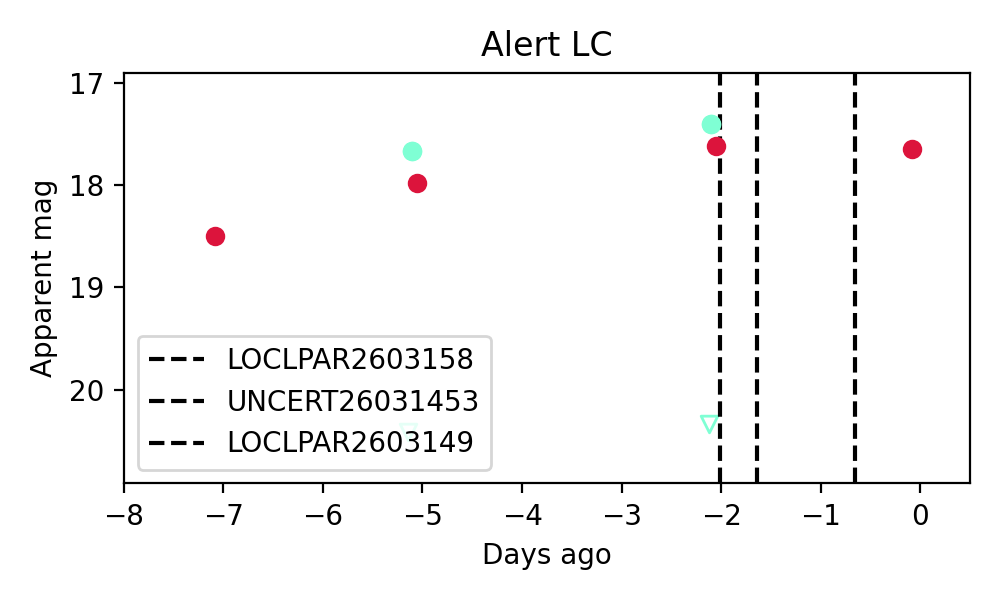
3. ZTF26aakjamd (FBOT?) [Back to Top] [Share] [Trigger Swift] [Fritz ] [Lasair ]RA, Dec: 196.50797, -15.83748 13h 6m1.91s, -15d-50m-14.91sGalactic (l, b): 308.07128, 46.88859 ext(g-r) = 0.066PS1: 1 source in 3 arcsec Closest: d = 1.68 arcsec photoz=0.05+/-0.03 peak abs mag = -20.32
4. ZTF26aakjzdt (Afterglow?) [Back to Top] [Share] [Trigger Swift] [Fritz ] [Lasair ]RA, Dec: 219.31727, 71.84175 14h37m16.14s, 71d50m30.31sGalactic (l, b): 111.99364, 42.96755 ext(g-r) = 0.028LegacySurvey: 1 sources in 3 arcsec Closest: d = 0.83 arcsec, 45.4 deg (east of north) photoz=0.03 (68% bounds 0.01, 0.14), type=REX peak abs mag = -17.72 (68% bounds -15.47, -21.45) Consistent with synchrotron, g-r>0!
5. ZTF26aakkctn (FBOT?) [Back to Top] [Share] [Trigger Swift] [Fritz ] [Lasair ]RA, Dec: 209.7857, 16.79373 13h59m8.57s, 16d47m37.44sGalactic (l, b): 2.99927, 71.23885 ext(g-r) = 0.023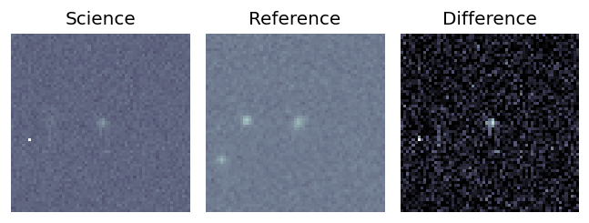
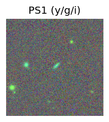
peak abs mag = -19.95 LegacySurvey: 1 sources in 3 arcsec Closest: d = 0.78 arcsec, 293.6 deg (east of north) photoz=0.09 (68% bounds 0.06, 0.12), type=SER peak abs mag = -18.89 (68% bounds -17.97, -19.59) 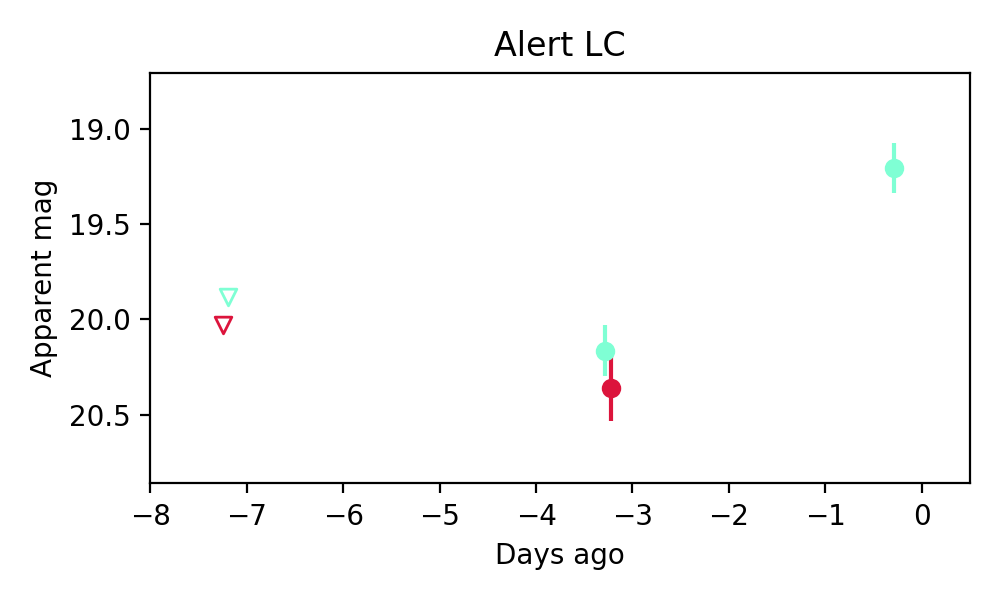
6. ZTF26aakkeyr (FBOT?) [Back to Top] [Share] [Trigger Swift] [Fritz ] [Lasair ]RA, Dec: 226.72916, 68.95419 15h 6m55.00s, 68d57m15.07sGalactic (l, b): 106.85979, 43.7045 ext(g-r) = 0.022LegacySurvey: 1 sources in 3 arcsec Closest: d = 0.77 arcsec, 300.4 deg (east of north) photoz=0.11 (68% bounds 0.05, 0.18), type=REX peak abs mag = -19.79 (68% bounds -18.06, -20.95)
7. ZTF26aaklerc (Afterglow?) [Back to Top] [Share] [Trigger Swift] [Fritz ] [Lasair ]RA, Dec: 41.10443, 37.49173 2h44m25.06s, 37d29m30.24sGalactic (l, b): 146.50884, -20.15372 ext(g-r) = 0.061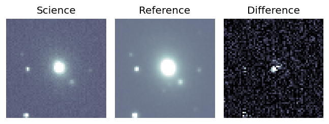
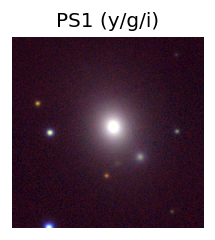
PS1: 1 source in 3 arcsec Closest: d = 1.98 arcsec photoz=0.03+/-0.00 peak abs mag = -16.93 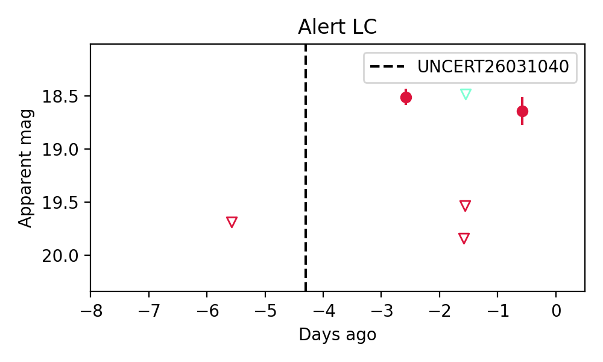
8. ZTF26aaklsua (Afterglow?) [Back to Top] [Share] [Trigger Swift] [Fritz ] [Lasair ]RA, Dec: 118.04087, 69.94966 7h52m9.81s, 69d56m58.79sGalactic (l, b): 145.52636, 30.54755 ext(g-r) = 0.035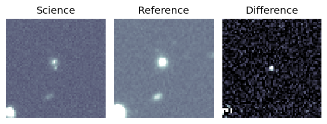
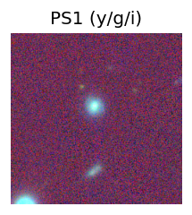
LegacySurvey: 1 sources in 3 arcsec Closest: d = 3.37 arcsec, 329.4 deg (east of north) photoz=0.06 (68% bounds 0.03, 0.12), type=EXP peak abs mag = -17.75 (68% bounds -16.06, -19.23) 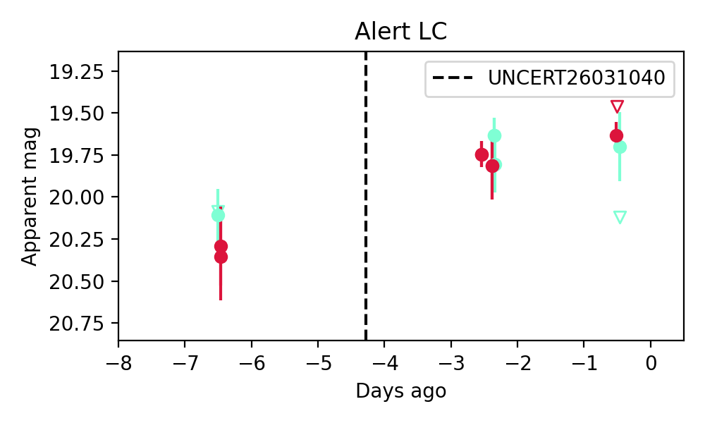
Consistent with synchrotron, g-r>0!
9. ZTF26aakourq (FBOT?) [Back to Top] [Share] [Trigger Swift] [Fritz ] [Lasair ]RA, Dec: 155.01673, 69.72643 10h20m4.02s, 69d43m35.13sGalactic (l, b): 139.59817, 42.16476 ext(g-r) = 0.053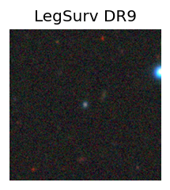
peak abs mag = -22.12 LegacySurvey: 1 sources in 3 arcsec Closest: d = 0.05 arcsec, 124.6 deg (east of north) photoz=0.13 (68% bounds 0.08, 0.39), type=REX peak abs mag = -19.41 (68% bounds -18.24, -22.05)
10. ZTF26aakrsab (FBOT?) [Back to Top] [Share] [Trigger Swift] [Fritz ] [Lasair ]RA, Dec: 236.02369, 7.20552 15h44m5.69s, 7d12m19.87sGalactic (l, b): 15.09881, 44.52502 ext(g-r) = 0.041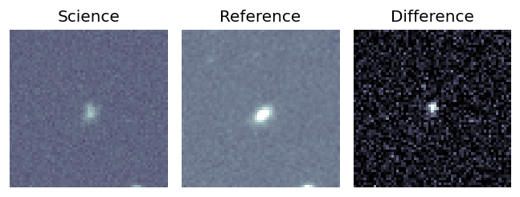
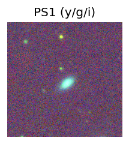
peak abs mag = -19.40 LegacySurvey: 1 sources in 3 arcsec Closest: d = 2.77 arcsec, 199.4 deg (east of north) photoz=0.1 (68% bounds 0.09, 0.11), type=SER peak abs mag = -19.42 (68% bounds -19.12, -19.62) 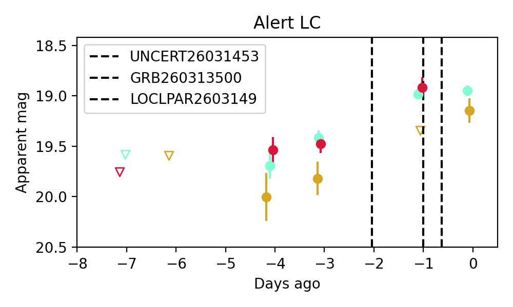
Consistent with synchrotron, g-r>0!
11. ZTF26aakzjlr (Afterglow?) [Back to Top] [Share] [Trigger Swift] [Fritz ] [Lasair ]RA, Dec: 49.23263, 1.31187 3h16m55.83s, 1d18m42.74sGalactic (l, b): 179.76909, -44.90763 ext(g-r) = 0.13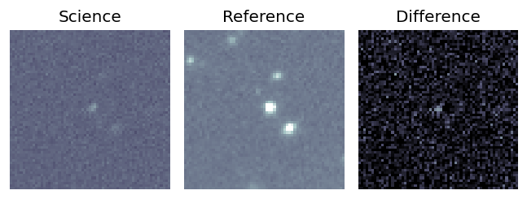
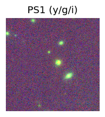
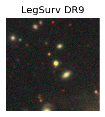
LegacySurvey: 1 sources in 3 arcsec Closest: d = 2.63 arcsec, 227.6 deg (east of north) photoz=0.97 (68% bounds 0.84, 1.12), type=REX peak abs mag = -25.22 (68% bounds -24.83, -25.62) 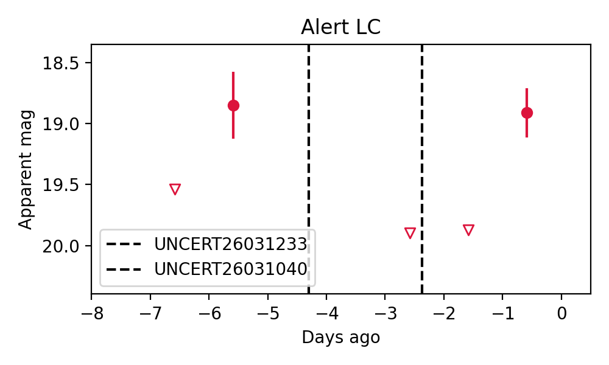
12. ZTF26aalbdxs (Afterglow?) [Back to Top] [Share] [Trigger Swift] [Fritz ] [Lasair ]RA, Dec: 113.35864, 13.15242 7h33m26.07s, 13d 9m8.72sGalactic (l, b): 205.69401, 15.16954 ext(g-r) = 0.042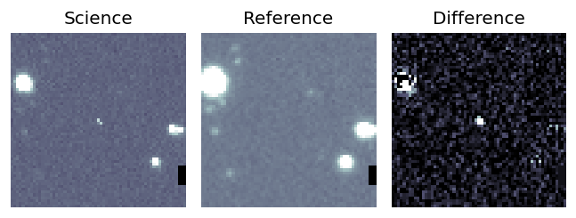
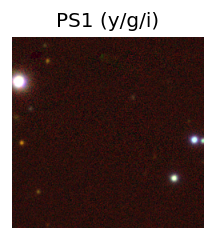
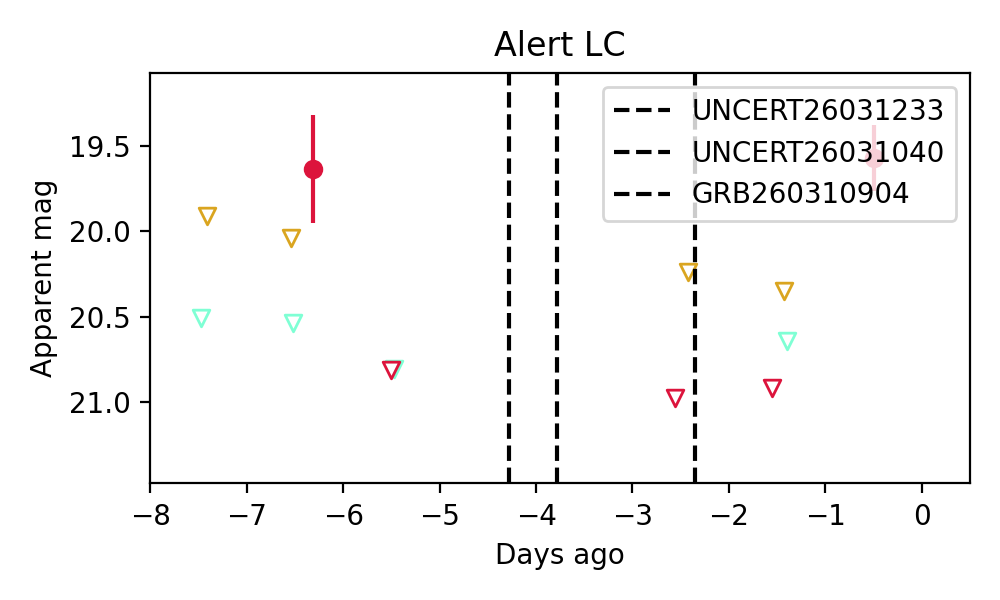
13. ZTF26aalbeox (FBOT?) [Back to Top] [Share] [Trigger Swift] [Fritz ] [Lasair ]RA, Dec: 139.71808, -11.28328 9h18m52.34s, -11d-16m-59.82sGalactic (l, b): 242.34508, 25.74179 ext(g-r) = 0.072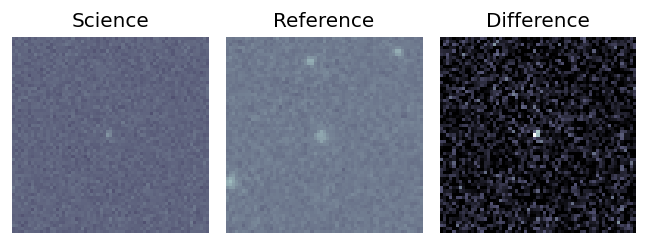
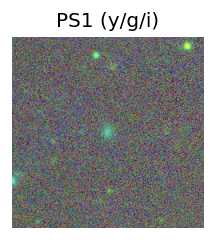
LegacySurvey: 1 sources in 3 arcsec Closest: d = 0.51 arcsec, 122.6 deg (east of north) photoz=0.17 (68% bounds 0.12, 0.22), type=EXP peak abs mag = -20.04 (68% bounds -19.18, -20.66) 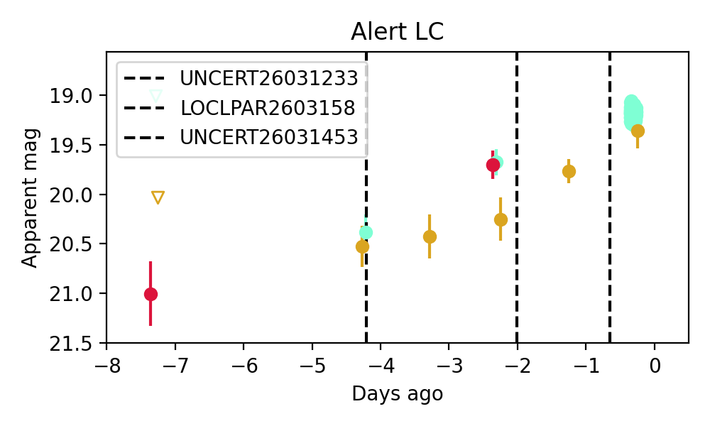
Consistent with synchrotron, g-r>0!
14. ZTF26aalbfqg (Afterglow?) [Back to Top] [Share] [Trigger Swift] [Fritz ] [Lasair ]RA, Dec: 116.31301, 7.24285 7h45m15.12s, 7d14m34.25sGalactic (l, b): 212.51836, 15.24207 ext(g-r) = 0.033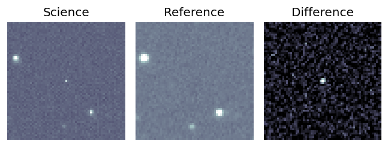
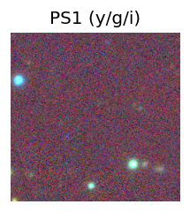
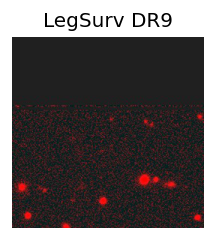
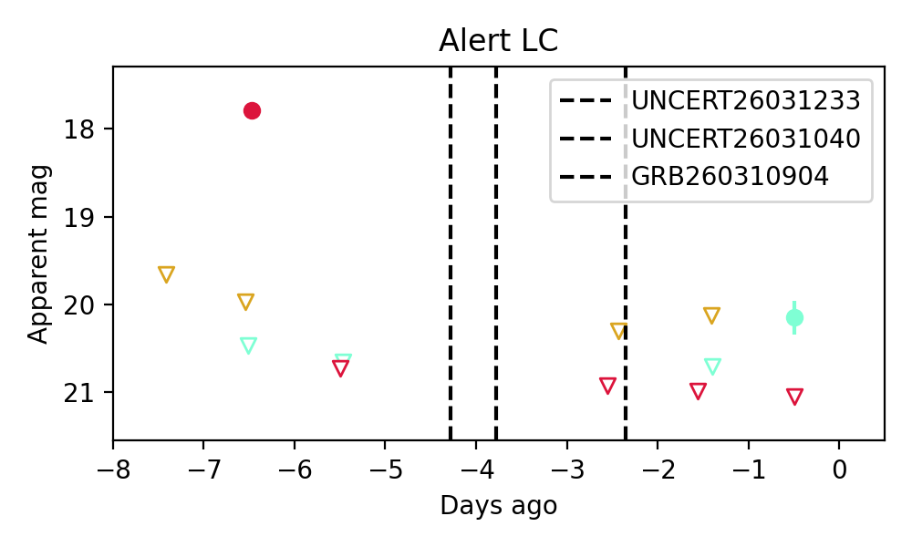
15. ZTF26aalbida (Afterglow?) [Back to Top] [Share] [Trigger Swift] [Fritz ] [Lasair ]RA, Dec: 114.04334, -5.13727 7h36m10.40s, -5d-8m-14.18sGalactic (l, b): 222.67547, 7.53299 ext(g-r) = 0.23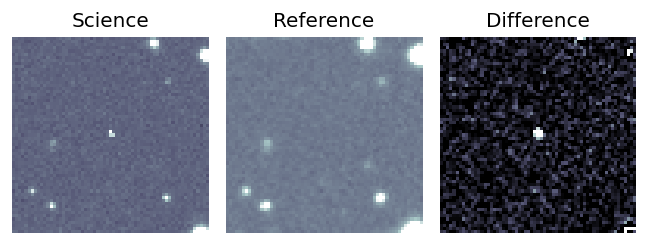
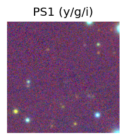
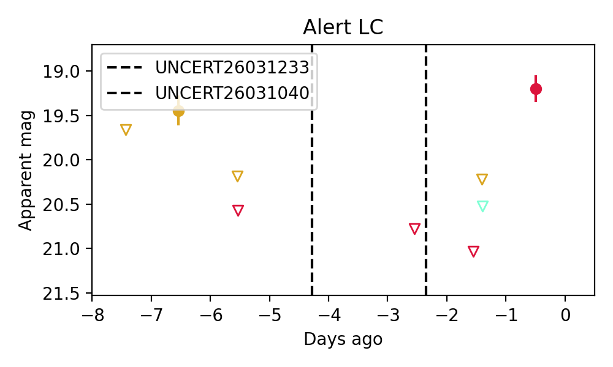
16. ZTF26aalbidd (FBOT?) [Back to Top] [Share] [Trigger Swift] [Fritz ] [Lasair ]RA, Dec: 113.70542, -5.29412 7h34m49.30s, -5d-17m-38.84sGalactic (l, b): 222.65414, 7.16232 ext(g-r) = 0.16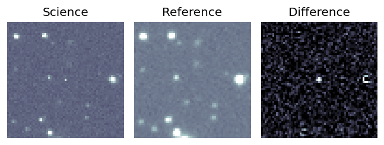
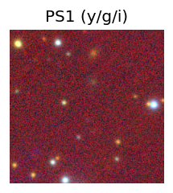
PS1: 1 source in 3 arcsec Closest: d = 8.73 arcsec photoz=0.28+/-0.08 peak abs mag = -21.06 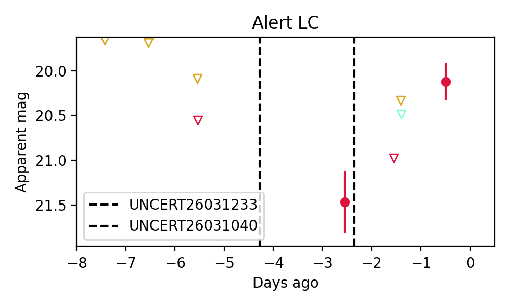
17. ZTF26aalbkel (FBOT?) [Back to Top] [Share] [Trigger Swift] [Fritz ] [Lasair ]RA, Dec: 102.63225, 20.31763 6h50m31.74s, 20d19m3.46sGalactic (l, b): 194.59988, 8.91787 WARNING: -2.6 deg from ecliptic plane ext(g-r) = 0.116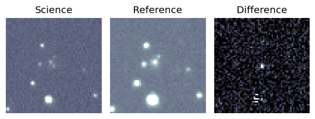
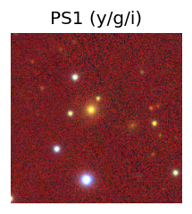
PS1: 1 source in 3 arcsec Closest: d = 1.85 arcsec photoz=0.16+/-0.05 peak abs mag = -19.68 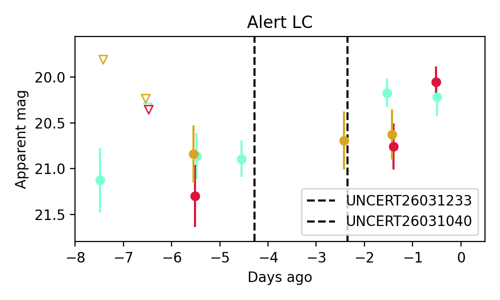
Consistent with synchrotron, g-r>0!
18. ZTF26aalceom (Afterglow?) [Back to Top] [Share] [Trigger Swift] [Fritz ] [Lasair ]RA, Dec: 119.16997, -6.12141 7h56m40.79s, -6d-7m-17.06sGalactic (l, b): 226.04135, 11.53095 ext(g-r) = 0.103PS1: 1 source in 3 arcsec Closest: d = 2.83 arcsec photoz=0.68+/-0.29 peak abs mag = -27.34
19. ZTF26aalciln (Afterglow?) [Back to Top] [Share] [Trigger Swift] [Fritz ] [Lasair ]RA, Dec: 141.88093, -6.6678 9h27m31.42s, -6d-40m-4.07sGalactic (l, b): 239.65487, 30.23919 ext(g-r) = 0.04LegacySurvey: 1 sources in 3 arcsec Closest: d = 4.45 arcsec, 308.7 deg (east of north) photoz=0.04 (68% bounds 0.03, 0.05), type=SER peak abs mag = -17.03 (68% bounds -16.72, -17.37) Consistent with synchrotron, g-r>0!
20. ZTF26aalcsgh (Afterglow?) [Back to Top] [Share] [Trigger Swift] [Fritz ] [Lasair ]RA, Dec: 118.52675, 39.63303 7h54m6.42s, 39d37m58.89sGalactic (l, b): 180.40707, 28.42159 ext(g-r) = 0.056peak abs mag = -19.39 LegacySurvey: 1 sources in 3 arcsec Closest: d = 3.86 arcsec, 339.9 deg (east of north) photoz=0.36 (68% bounds 0.21, 0.72), type=REX peak abs mag = -21.53 (68% bounds -20.23, -23.32) Consistent with synchrotron, g-r>0!
21. ZTF26aaldeet (Afterglow?) [Back to Top] [Share] [Trigger Swift] [Fritz ] [Lasair ]RA, Dec: 128.49421, -8.18153 8h33m58.61s, -8d-10m-53.52sGalactic (l, b): 232.76817, 18.43495 ext(g-r) = 0.042LegacySurvey: 1 sources in 3 arcsec Closest: d = 3.53 arcsec, 154.1 deg (east of north) photoz=0.98 (68% bounds 0.85, 1.11), type=REX peak abs mag = -25.05 (68% bounds -24.67, -25.4)
22. ZTF26aaldtwa (FBOT?) [Back to Top] [Share] [Trigger Swift] [Fritz ] [Lasair ]RA, Dec: 125.00867, 36.80551 8h20m2.08s, 36d48m19.82sGalactic (l, b): 184.85758, 32.80902 ext(g-r) = 0.058peak abs mag = -24.00 LegacySurvey: 1 sources in 3 arcsec Closest: d = 1.05 arcsec, 93.9 deg (east of north) photoz=0.99 (68% bounds 0.84, 1.19), type=REX peak abs mag = -24.93 (68% bounds -24.48, -25.41)
23. ZTF26aalebdw (Afterglow?) [Back to Top] [Share] [Trigger Swift] [Fritz ] [Lasair ]RA, Dec: 125.70602, 28.76557 8h22m49.45s, 28d45m56.07sGalactic (l, b): 194.25369, 31.48935 ext(g-r) = 0.033
24. ZTF26aalgvil (Afterglow?FBOT?) [Back to Top] [Share] [Trigger Swift] [Fritz ] [Lasair ]RA, Dec: 153.94329, -5.42369 10h15m46.39s, -5d-25m-25.30sGalactic (l, b): 247.89684, 40.26092 ext(g-r) = 0.043LegacySurvey: 1 sources in 3 arcsec Closest: d = 0.26 arcsec, 334.9 deg (east of north) photoz=0.2 (68% bounds 0.1, 0.23), type=PSF peak abs mag = -22.03 (68% bounds -20.45, -22.35)
25. ZTF26aalgwun (FBOT?) [Back to Top] [Share] [Trigger Swift] [Fritz ] [Lasair ]RA, Dec: 209.32503, 28.9674 13h57m18.01s, 28d58m2.64sGalactic (l, b): 43.98795, 75.36451 ext(g-r) = 0.014peak abs mag = -22.42 LegacySurvey: 1 sources in 3 arcsec Closest: d = 1.37 arcsec, 9.1 deg (east of north) photoz=0.19 (68% bounds 0.12, 0.63), type=EXP peak abs mag = -20.01 (68% bounds -18.88, -23.11)
26. ZTF26aalhbxl (FBOT?) [Back to Top] [Share] [Trigger Swift] [Fritz ] [Lasair ]RA, Dec: 231.74033, 27.55109 15h26m57.68s, 27d33m3.92sGalactic (l, b): 42.81367, 55.60455 ext(g-r) = 0.05peak abs mag = -18.78 LegacySurvey: 1 sources in 3 arcsec Closest: d = 0.51 arcsec, 318.1 deg (east of north) photoz=0.34 (68% bounds 0.03, 1.15), type=EXP peak abs mag = -21.03 (68% bounds -14.99, -24.25) Consistent with synchrotron, g-r>0!
27. ZTF26aalhbzf (FBOT?) [Back to Top] [Share] [Trigger Swift] [Fritz ] [Lasair ]RA, Dec: 243.47506, 51.23713 16h13m54.02s, 51d14m13.67sGalactic (l, b): 79.5926, 45.16321 ext(g-r) = 0.022LegacySurvey: 1 sources in 3 arcsec Closest: d = 0.13 arcsec, 313.2 deg (east of north) photoz=0.74 (68% bounds 0.27, 1.21), type=REX peak abs mag = -23.32 (68% bounds -20.74, -24.63) Consistent with synchrotron, g-r>0!
28. ZTF26aalhcqv (Afterglow?) [Back to Top] [Share] [Trigger Swift] [Fritz ] [Lasair ]RA, Dec: 233.83065, 25.28621 15h35m19.35s, 25d17m10.35sGalactic (l, b): 39.55632, 53.35608 ext(g-r) = 0.057LegacySurvey: 1 sources in 3 arcsec Closest: d = 3.72 arcsec, 245.2 deg (east of north) photoz=0.54 (68% bounds 0.35, 0.91), type=REX peak abs mag = -22.78 (68% bounds -21.7, -24.16) Consistent with synchrotron, g-r>0!
29. ZTF26aalhkfn (FBOT?) [Back to Top] [Share] [Trigger Swift] [Fritz ] [Lasair ]RA, Dec: 251.39152, 42.70555 16h45m33.96s, 42d42m19.97sGalactic (l, b): 67.30304, 40.59198 ext(g-r) = 0.017peak abs mag = -22.21 LegacySurvey: 1 sources in 3 arcsec Closest: d = 0.44 arcsec, 0.4 deg (east of north) photoz=0.2 (68% bounds 0.18, 0.23), type=REX peak abs mag = -20.24 (68% bounds -20.01, -20.52) Consistent with synchrotron, g-r>0!
30. ZTF26aalinio (Afterglow?) [Back to Top] [Share] [Trigger Swift] [Fritz ] [Lasair ]RA, Dec: 237.00874, 15.75274 15h48m2.10s, 15d45m9.85sGalactic (l, b): 26.69411, 47.59533 ext(g-r) = 0.04
31. ZTF26aalizrc (Afterglow?) [Back to Top] [Share] [Trigger Swift] [Fritz ] [Lasair ]RA, Dec: 318.30854, 11.54923 21h13m14.05s, 11d32m57.24sGalactic (l, b): 61.64978, -24.48348 ext(g-r) = 0.108LegacySurvey: 1 sources in 3 arcsec Closest: d = 3.49 arcsec, 319.2 deg (east of north) photoz=0.16 (68% bounds 0.07, 0.23), type=REX peak abs mag = -20.82 (68% bounds -18.92, -21.7)
32. ZTF26aaljaks (Afterglow?) [Back to Top] [Share] [Trigger Swift] [Fritz ] [Lasair ]RA, Dec: 320.47066, 0.03057 21h21m52.96s, 0d 1m50.05sGalactic (l, b): 52.31869, -32.88238 ext(g-r) = 0.06peak abs mag = -19.49 LegacySurvey: 1 sources in 3 arcsec Closest: d = 1.94 arcsec, 266.5 deg (east of north) photoz=0.07 (68% bounds 0.05, 0.08), type=SER peak abs mag = -19.69 (68% bounds -19.09, -20.08)